Emisora, biblioteca, noticias, sugerencias y privacidad.
SERVICIOS PÚBLICOS · INFORMACIÓN
Emisora1 de 6
Escucha Universitaria Estéreo en vivo desde Explorar. Sigue sonando aunque bloquees el teléfono.
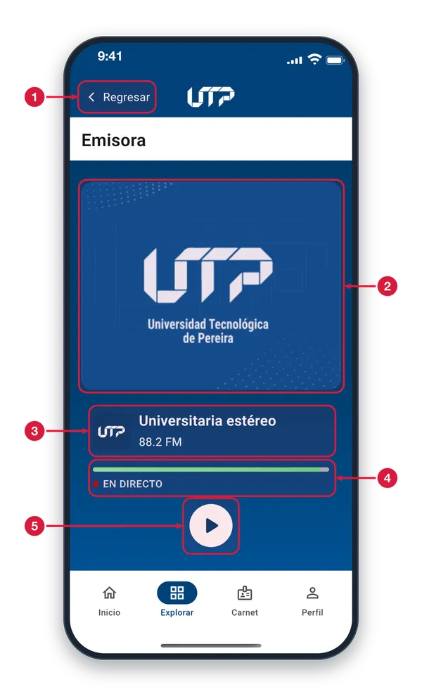
Regresar Vuelves a la pantalla anterior. Si la emisora está sonando, no se detiene al salir.
Imagen de la emisora Es la imagen de Universitaria Estéreo. Es solo ilustrativa: al tocarla no pasa nada.
Nombre y frecuencia Muestra el nombre de la emisora, Universitaria Estéreo, y su frecuencia en el dial: 88.2 FM.
En directo Indica que escuchas la transmisión en vivo. La barra verde es solo decorativa: no se puede adelantar ni retroceder.
Reproducir o pausar Toca para escuchar la emisora; el icono cambia a pausa para detenerla. Al salir de la pantalla sigue sonando y verás un mini reproductor con «Cerrar emisora».
Biblioteca2 de 6
Entra al sitio de la Biblioteca e Información Científica para ver sus servicios y el catálogo. Desde Explorar.
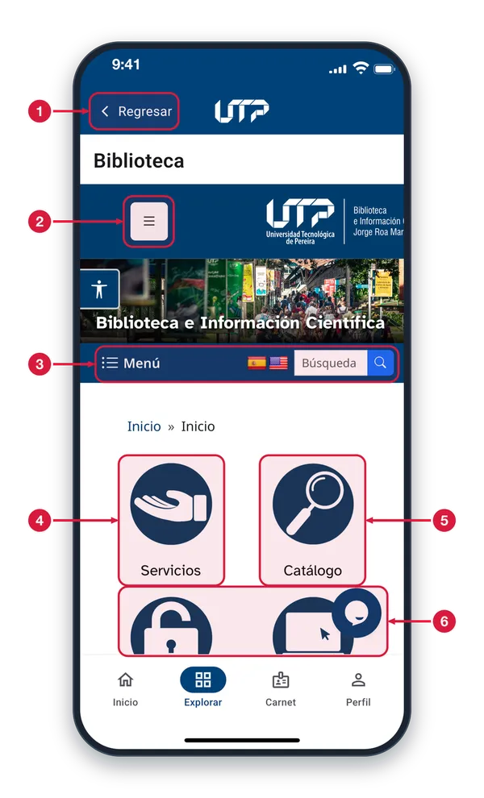
Regresar Sales del módulo y vuelves a la pantalla anterior. Úsalo cuando termines de consultar la página.
Menú de la página Abre el menú del sitio de la biblioteca con sus secciones.
Menú, idioma y búsqueda «Menú» despliega las secciones del sitio. Las banderas permiten elegir el idioma de la página. En «Búsqueda» escribes una palabra y tocas la lupa.
Servicios Toca este acceso para ver los servicios que ofrece la biblioteca.
Catálogo Toca este acceso para consultar el catálogo de la biblioteca.
Más accesos Debajo hay otros accesos de la biblioteca. Desliza hacia abajo para verlos y toca el que necesites.
Noticias3 de 6
Lee las noticias de la UTP en el sitio de Comunicaciones. Entras desde Explorar, sin iniciar sesión.
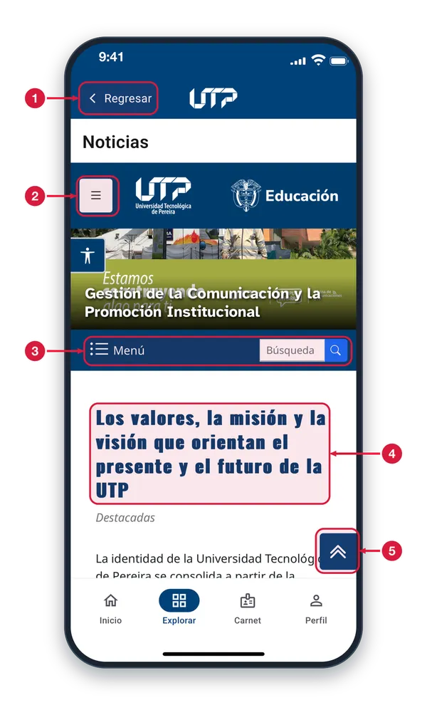
Regresar Sales del módulo y vuelves a la pantalla anterior. Úsalo cuando termines de leer.
Menú de la página Abre el menú del sitio de Comunicaciones para ir a otras secciones.
Menú y búsqueda «Menú» despliega las secciones del sitio. En «Búsqueda» escribes una palabra y tocas la lupa para encontrar noticias.
Noticias Aquí aparecen las noticias y artículos. Desliza hacia abajo para leer más y toca un enlace para abrirlo dentro de la app.
Volver arriba Te lleva de nuevo al inicio de la página, para no tener que deslizar hacia arriba.
Tienda UTP4 de 6
La tienda virtual de la Universidad dentro de la app. Se abre desde Explorar y se maneja como una página web.
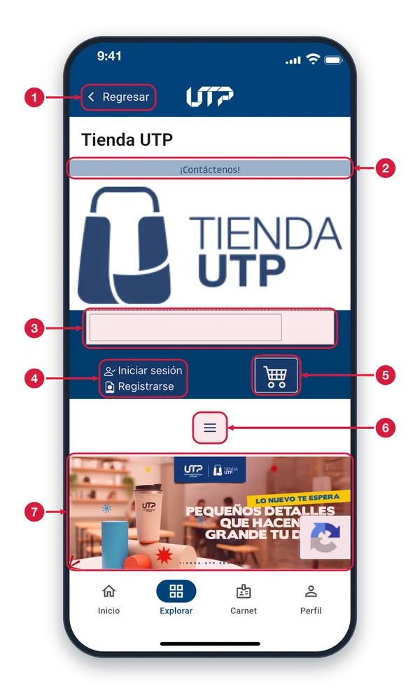
Regresar Toca «Regresar» para salir de la tienda y volver a la pantalla anterior.
Contáctenos Enlace de la tienda para comunicarte con ella. Tócalo para ver cómo contactarla.
Buscador de la tienda Toca este campo y escribe el producto que buscas dentro de la tienda.
Iniciar sesión / Registrarse Accesos propios de la tienda: inicia sesión con tu cuenta de la tienda o toca «Registrarse» para crear una. No usan tu sesión de la app.
Carrito Carrito de compras de la tienda: aquí ves los productos que vas agregando.
Menú de la tienda Toca las tres rayas para ver las secciones y categorías de la tienda.
Novedades Imagen con las novedades de la tienda. Desliza hacia abajo para recorrer el resto de la página.
SOLI5 de 6
Portal SOLI dentro de la app. Se abre desde Explorar y funciona como una página web con su propio inicio de sesión.
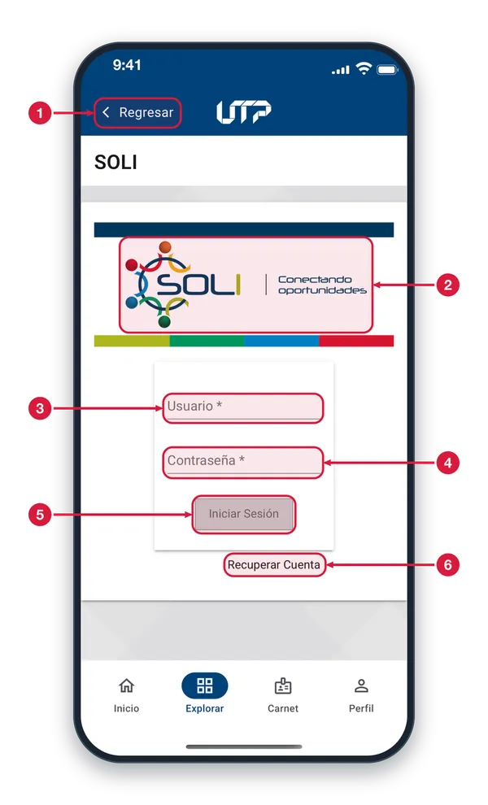
Regresar Toca «Regresar» para salir de SOLI y volver a la pantalla anterior.
Portal SOLI Página de SOLI, «Conectando oportunidades». Se abre dentro de la app, sin salir de ella.
Usuario Escribe aquí tu usuario de SOLI.
Contraseña Escribe aquí tu contraseña de SOLI.
Iniciar Sesión Toca este botón para entrar a SOLI cuando hayas escrito tu usuario y tu contraseña.
Recuperar Cuenta Toca este enlace si olvidaste tus datos de acceso; la página de SOLI te guía para recuperar tu cuenta.
Auditorios6 de 6
Página de Gestión de Servicios Institucionales para conocer los auditorios y solicitar su reserva. Se abre desde Explorar.
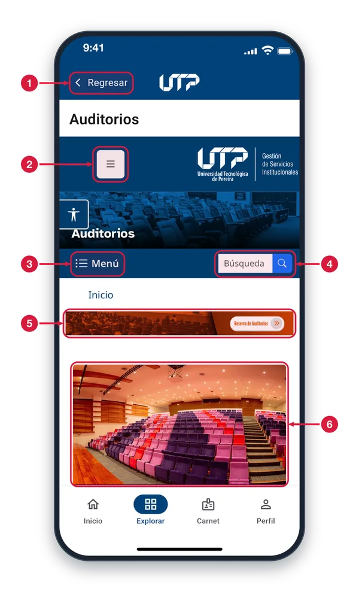
Regresar Toca «Regresar» para salir de la página y volver a la pantalla anterior.
Menú del sitio Toca las tres rayas para abrir el menú de la página de Gestión de Servicios Institucionales.
Menú Toca «Menú» para ver las secciones del sitio y entrar a la que necesites.
Búsqueda Escribe una palabra y toca la lupa para buscar un tema dentro del sitio.
Reserva de Auditorios Toca el botón «Reserva de Auditorios» para pedir un espacio.
Los auditorios Imagen de uno de los auditorios. Desliza hacia abajo para ver la información de cada espacio.
SERVICIOS PÚBLICOS · TUS COMENTARIOS Y PRIVACIDAD
Sugerencias: calificar la app1 de 8
Aquí calificas la app y escribes tu opinión. Se abre desde Perfil, desde Explorar o con el icono de sugerencias.
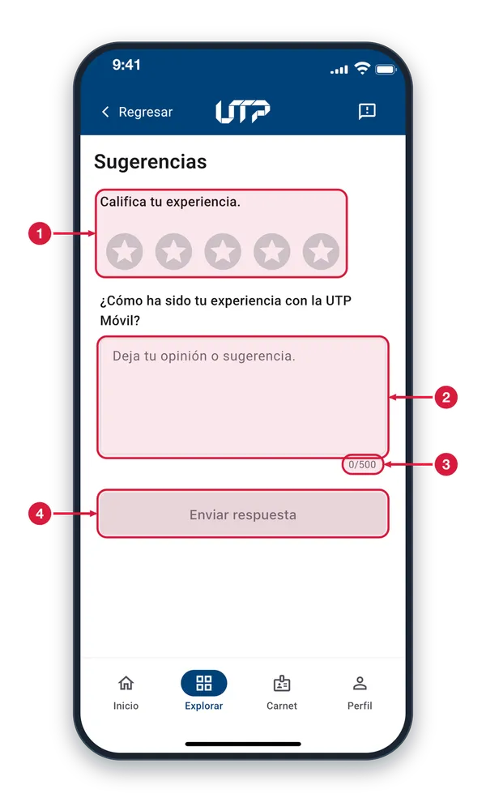
Calificación con estrellas Toca de 1 a 5 estrellas para calificar la app; se pintan hasta la que tocaste. Es obligatorio calificar para poder enviar.
Tu opinión o sugerencia Escribe aquí lo que piensas de la UTP Móvil. Es opcional y admite hasta 500 caracteres.
Contador de caracteres Muestra cuántos de los 500 caracteres permitidos llevas escritos.
Enviar respuesta Está en gris mientras no elijas una calificación. Cuando se activa, tócalo para enviar tu opinión y aparece el mensaje de agradecimiento.
Sugerencias: formulario listo2 de 8
Con la calificación elegida y tu comentario escrito, el botón se activa y puedes enviar tu opinión.
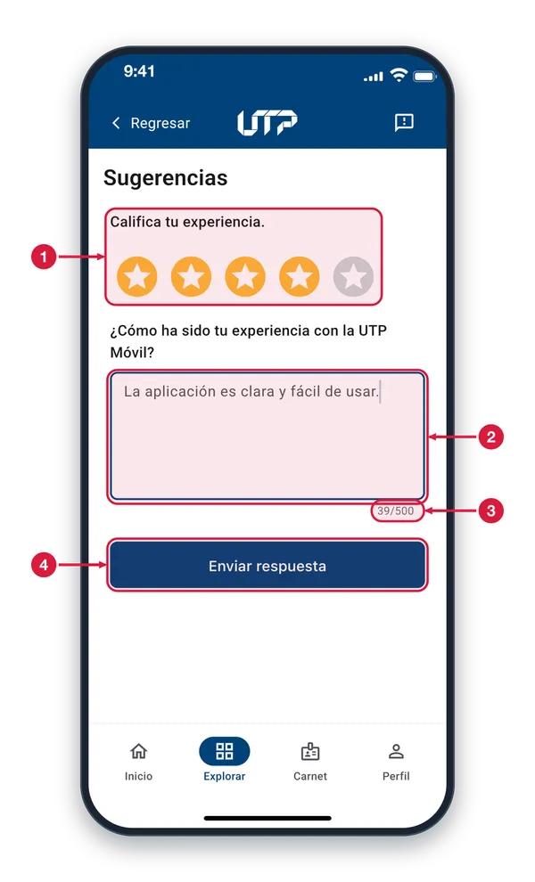
Calificación elegida Las estrellas se pintan de naranja hasta la que tocaste. Toca otra para cambiar la calificación antes de enviar.
Comentario escrito Mientras escribes, el campo se resalta con borde azul. El comentario es opcional: puedes enviar solo la calificación.
Caracteres usados Se actualiza mientras escribes. El máximo es 500 caracteres; al llegar al límite el contador lo avisa.
Enviar respuesta Ya está activo (azul). Tócalo para enviar; mientras se envía queda en espera. Si falla, aparece un aviso y puedes intentarlo otra vez.
Opinión enviada3 de 8
Confirmación que aparece en una hoja inferior cuando se envía tu calificación y tu comentario.
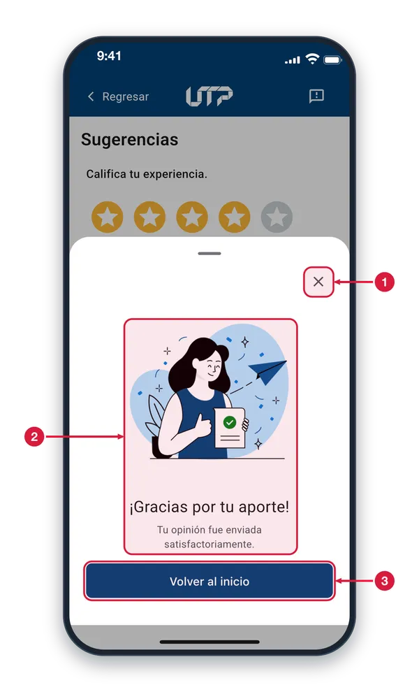
Cerrar (x) Toca la x para cerrar el aviso y quedarte en Sugerencias con el formulario vacío. También puedes deslizar la hoja hacia abajo o tocar fuera de ella.
¡Gracias por tu aporte! Confirma que tu opinión se envió. No tienes que hacer nada más.
Volver al inicio Toca para cerrar el aviso e ir a la pestaña Inicio de la app.
PQRS4 de 8
Página del Sistema PQRS de la Universidad dentro de la app. Se abre desde Explorar o desde Perfil.
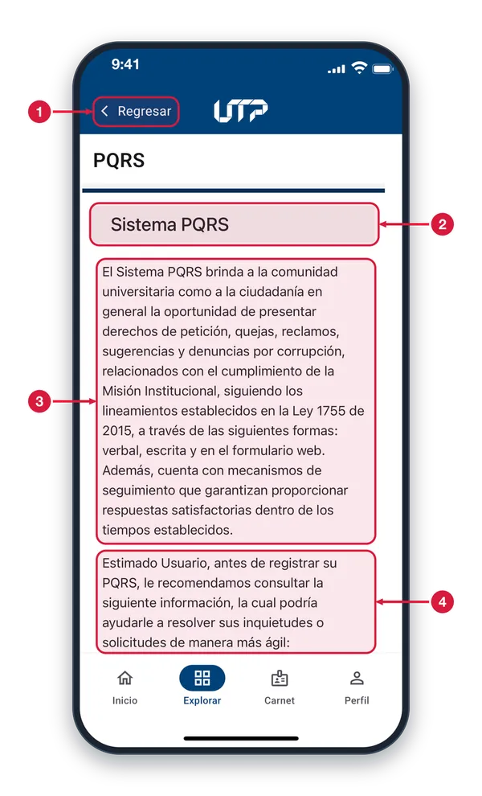
Regresar Toca «Regresar» para salir de PQRS y volver a la pantalla anterior.
Sistema PQRS Título de la página. Las PQRS son peticiones, quejas, reclamos, sugerencias y denuncias por corrupción.
Qué es el Sistema PQRS Explica que la comunidad universitaria y la ciudadanía pueden presentar sus PQRS de forma verbal, escrita o por el formulario web, con seguimiento y respuesta.
Antes de registrar tu PQRS Recomienda leer primero la información de la página: puede resolver tu duda más rápido. Desliza hacia abajo para ver las opciones disponibles.
Licencias de la aplicación5 de 8
Consulta las bibliotecas de código abierto que usa UTP Móvil y bajo qué licencia se distribuye cada una.
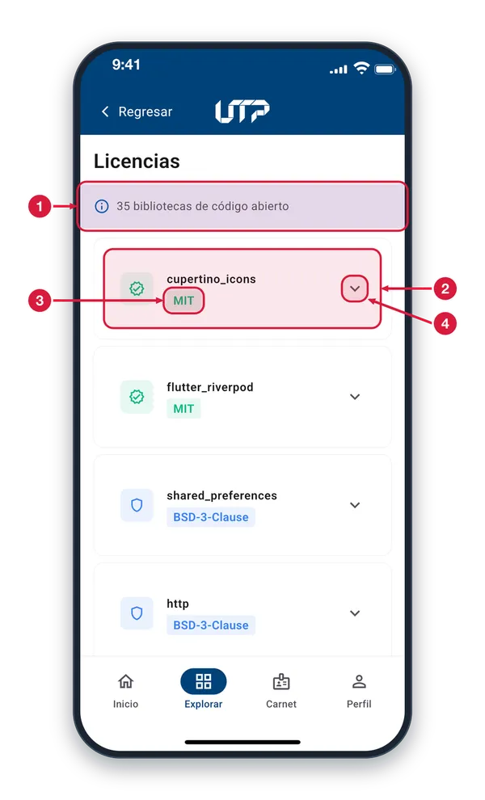
Total de bibliotecas Indica cuántas bibliotecas de código abierto emplea la aplicación. La lista está en orden alfabético.
Tarjeta de biblioteca Cada tarjeta muestra el nombre de la biblioteca. Las demás funcionan igual: desplázate hacia abajo para verlas todas.
Tipo de licencia Etiqueta con la licencia de la biblioteca, por ejemplo MIT, BSD o Apache.
Flecha para desplegar Toca la tarjeta o la flecha para leer el texto completo de la licencia.
Leer una licencia6 de 8
Al tocar una biblioteca se despliega el texto de su licencia. Toca de nuevo para cerrarlo.
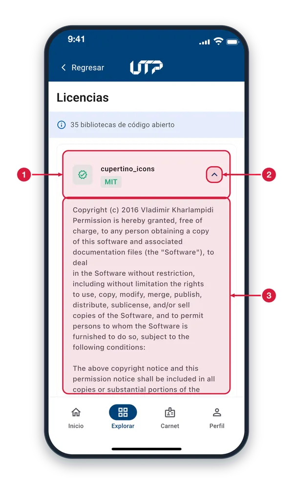
Biblioteca elegida Nombre de la biblioteca y su tipo de licencia. Sigue visible mientras lees el detalle.
Flecha para cerrar La flecha apunta hacia arriba cuando la licencia está desplegada. Tócala para contraerla.
Texto de la licencia Aquí está el texto legal completo, en inglés. Desplázate para leerlo hasta el final.
Política de Privacidad7 de 8
Aviso de privacidad de la Universidad: explica cómo se tratan tus datos personales. Se abre desde Explorar o Perfil.
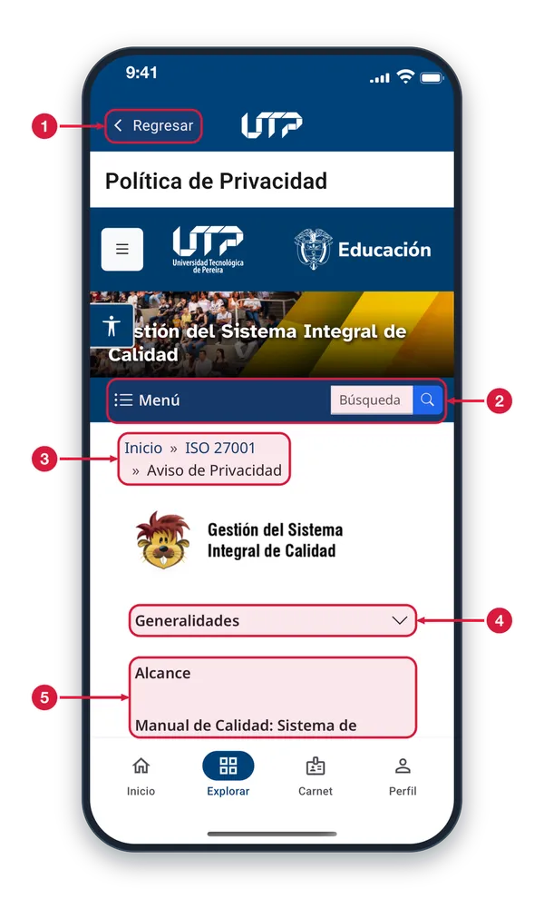
Regresar Toca «Regresar» para salir del aviso y volver a la pantalla anterior.
Menú y búsqueda del sitio «Menú» abre las secciones del sitio de Gestión de Calidad; «Búsqueda» sirve para encontrar un tema dentro de él.
Aviso de Privacidad Indica dónde estás: Aviso de Privacidad del Sistema Integral de Calidad. Toca «Inicio» o «ISO 27001» para subir de sección.
Generalidades Las secciones con flecha se despliegan: tócalas para leer su contenido y vuelve a tocarlas para cerrarlas.
Otras secciones Más secciones del aviso, como Alcance y el Manual de Calidad. Desliza hacia abajo para leerlas todas.
Manual de Usuario8 de 8
El manual de la app, dentro de la propia app, para consultarlo cuando quieras. Se abre desde Explorar.
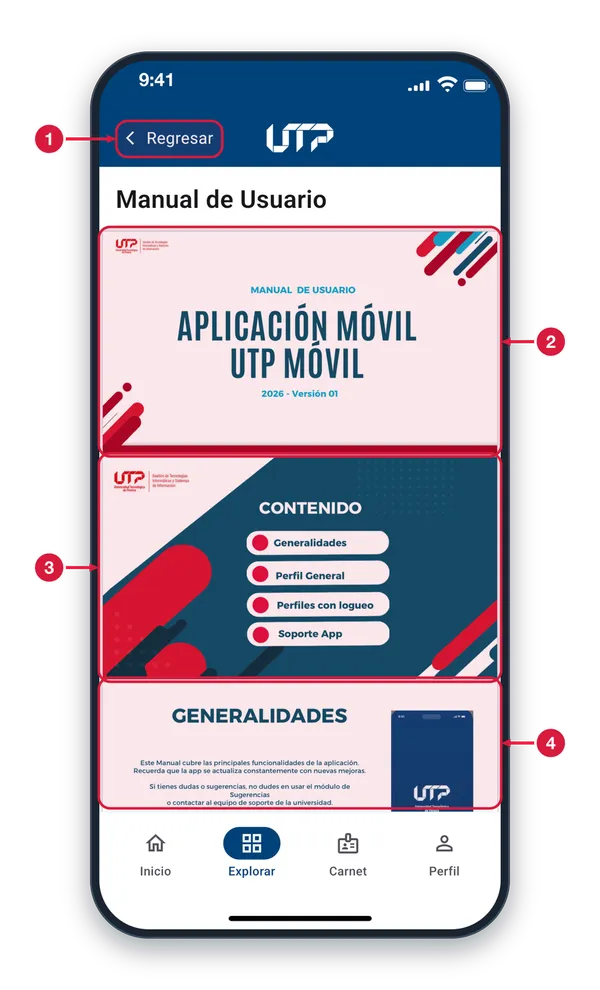
Regresar Toca «Regresar» para cerrar el manual y volver a la pantalla anterior.
Portada Primera página: el manual de usuario de la aplicación UTP Móvil.
Contenido Índice del manual: Generalidades, Perfil General, Perfiles con logueo y Soporte App.
Páginas del manual Las páginas siguen una tras otra: desliza hacia abajo para leerlas. Con dos dedos puedes acercar el texto.